第一步： 先加主持人好友
下一步： 加完主持人会说让你查号，支付宝查号地址www.taoyitu.com 把查号截图给主持人。

下一步: 看你的待收：登录你的淘宝号 点击己购买宝贝截图给主持人。(就是我们所说的待收货截图) 我们左手边(评价管理)有时侯主持人会要求我们截图的
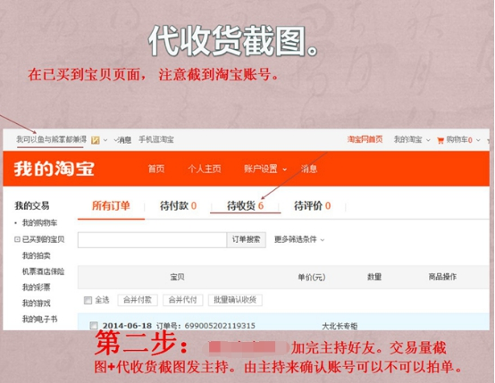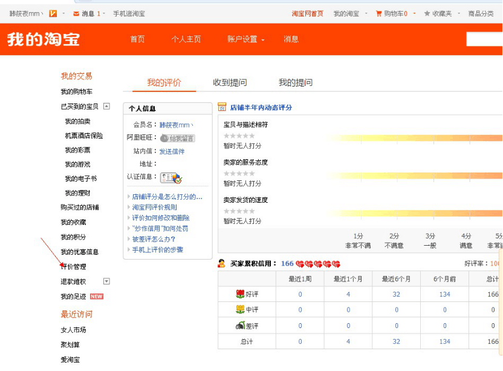下一步： 看主持人给的宝贝内片，从中找到关键词，找到后打开淘宝搜索，找到宝贝后店外截图给主持人确认，主持人说：1 对的 说：2 不对
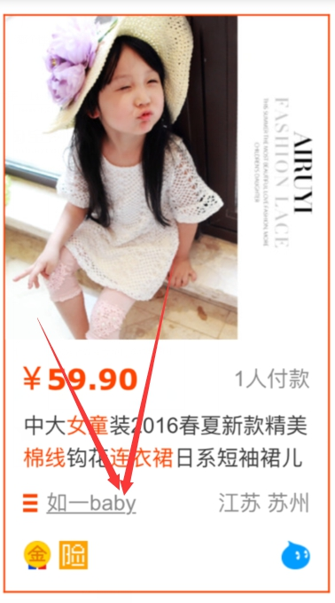下一步： 在我们右手边掌柜热卖那一栏便是直通车偶尔主持人会让我们在节通车找宝贝，这个掌柜热卖就是我们指的直通车
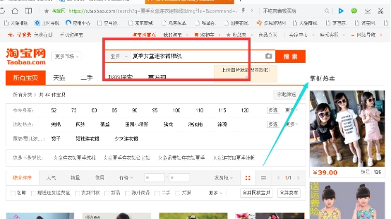下一步： 有的单子主持人要求货比三家指的是：货比三家就是先去隔壁三家店看**一下才可以进店的（一次只能进一家店）
下一步： 在你找到的这个宝贝旁边，还有好多一样的宝贝，是不同店铺的，此时随意点击一种店铺进去，点击进去，页面从首页一直拉低，图片全部的呈现出来就可以
下一步： 货比三家完了以后进店后，我们就需要进入要刷信誉的那家店铺： 给主持人这张截图，这张截图叫店内截图，进店后，第一时间截给主持人让他知道你已经进店了，然后开始浏览。 下一步 浏览的时候必须要从头拉到底，图片全部显示出来，一定要拉到底，因为卖家后台有量子监控，你必须拉到底，那边才会有浏览数量的
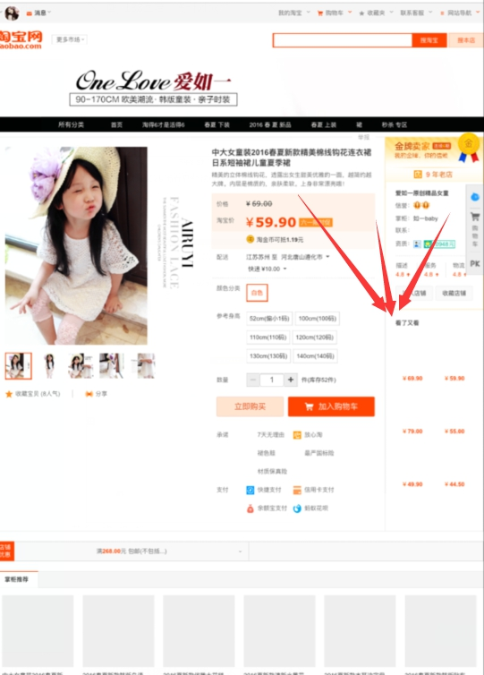下一步： 有时侯主持人叫你浏览副宝贝，意思是除了要刷信誉这家店铺商品之外，还要浏览刷信誉的那家店铺的另一种商品。同样也得需要商品的店内截图。主宝贝的页面拉到最下方 有个店铺推荐 里面的都是副宝贝电脑的副宝贝
下一步: 有时侯主持人叫你双收藏截图，截双收藏截图给主播（不要就不截）电脑的双收藏
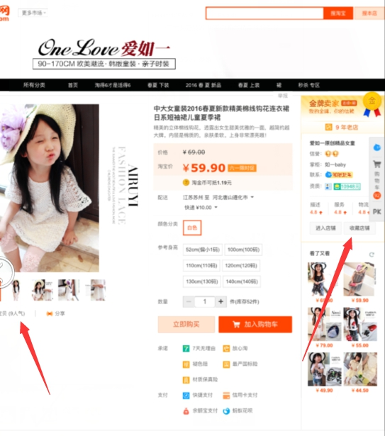下一步： 假聊 意思是跟卖家聊天向我们平时买在网上买东西一样东问西问;问他的宝贝的质量如何;有没有色差;什么时候能发货 内容通常会是有规定的，假聊的内容也得截图给主持人。 *注：假聊的时候不能出现刷信誉之类的话语。以及YY平台的相关信息
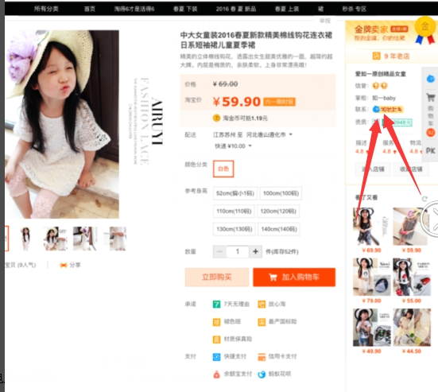下一步： 假聊完成后既可购买宝贝。收货地址一般都是真实地址。若主持人需要更改的再点击使用来不新的地址
>下一步： 提交订单前截图必须，截图给主持人，让主持人确认购买的店铺，宝贝价格。收货地址都对不对。
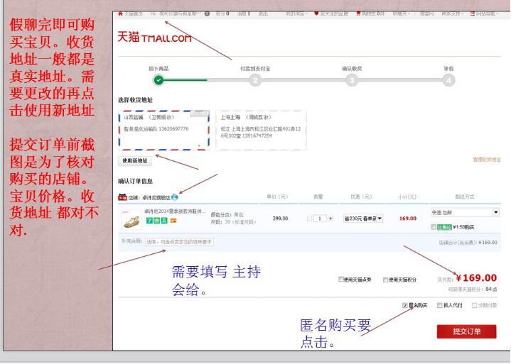下一步： 付款方式1: 找人代付，如果是代付的话，就点击找人代付这个页面。付款方付2:邀请主持人远程协助。付款方式3: 主持人有时要求我们把淘宝号给他（记住只能给号码和登录密码绝对不能给支付密码）
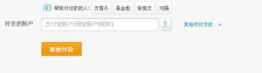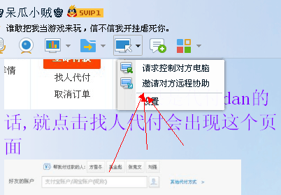下一步：
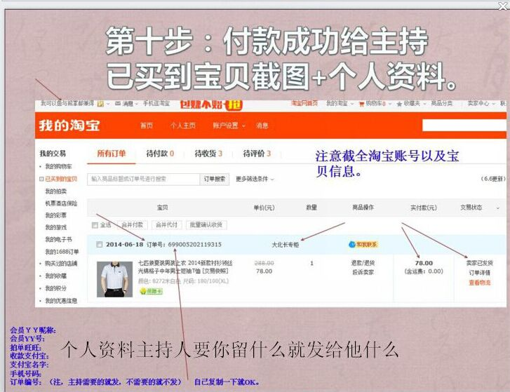下一步： 收货要求
下一步： 收款方式1：找人主持人付款 2找主持人远程协助 33主持人时会要你淘宝号（只能给号码登陆密码，绝对不能给支付密码）
下一步： 这个单子就做完了然后收款 手机支付宝钱包打开，点击收款 把页面划到最下面有一个更多，我们点开更多就能看到一个收款，做完单后去收款，用手机支付宝去收款
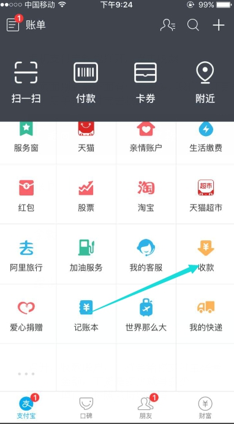下一步： 点开：收款账户，主持会给你支付宝账号 金额，工资是多少就写多少 理由，按照主持人要求写就行
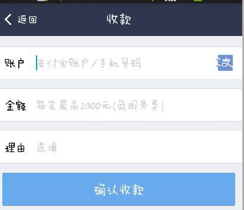